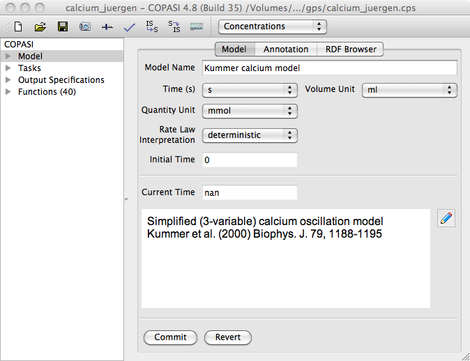
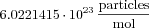
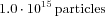
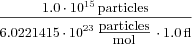
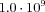
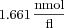

If you click on the Model branch of the object tree which was explained in the
COPASI GUI Elements section, you activate the dialog that lets you specify certain parameters for your model like its name and the units that are to be used for time, volume and concentration quantities throughout the current model. You can also give a textual description of your model that is more expressive than reactions and equations. You could for example state which part of the metabolism the model describes (e.g. glycolysis) and add some references to articles related to the model. This will help others (and yourself) to understand and identify your models.
|  |
| Dialog for general Model Settings |
Warning: You should be aware that changing the default units actually changes the model. If you, for example, change the default volume units from liters to milliliters, all the particle numbers in your model change by a factor of 1000.
COPASI internally represents amounts of species by particle numbers. If a concentration has to be displayed or is needed for some output this is calculated from the particle number, the volume of the compartment the species belongs to and Avogadro's number  . Lets assume that you have set your default volume units to fl and your default substance units to nmol and species
A is given with an the amount of . Further assuming that the volume of the compartment containing
A is set to 1.0 fl, we will then have a concentration of  for the species
A. Since the default substance unit is set to nmol instead of mol we have to multiply the result by . So COPASI would display a concentration of .
You are able to easily change the display between concentrations and particle numbers by selecting the drop down list in the menu bar at the top. COPASI, per default, displays the concentrations.
With the drop down list labeled Rate Law Interpretation you can specify how COPASI should interpret the kinetic rate laws you specify for your reactions. Per default, COPASI will interpret all rate laws as deterministic rate laws. Since COPASI allows the user to simulate a model either deterministically or stochastically, COPASI has to make some corrections to deterministic rate laws when using them for a stochastic simulation. This functionality sometimes interferes with rate laws that have been written for stochastic simulation and where the before mentioned corrections have already been made by the modeler. So if you have a model with rate laws that have been written to be used in a stochastic simulation, you have to specify this by selecting stochastic from this drop down list. If you do this, COPASI will not apply any corrections to the rate laws specified in the model when doing stochastic simulation.
In the field labeled Time (s) under the text Initial the user can tell COPASI to take the given value as the initial time for tasks like time course. This field is only enabled for editing for non-autonomous models, i.e., models which use the value of time explicitly in an ODE, an assignment, a rate law, or an event. COPASI automatically detects whether a model is non-autonomous. If you have a non-autonomous model you can set the start time of a time course by adjusting this field. For more information on running time course simulation is COPASI see
Time Course Simulation.
Warning: The update model option on each task will only update the initial time for non-autonomous models otherwise it will be left at 0.